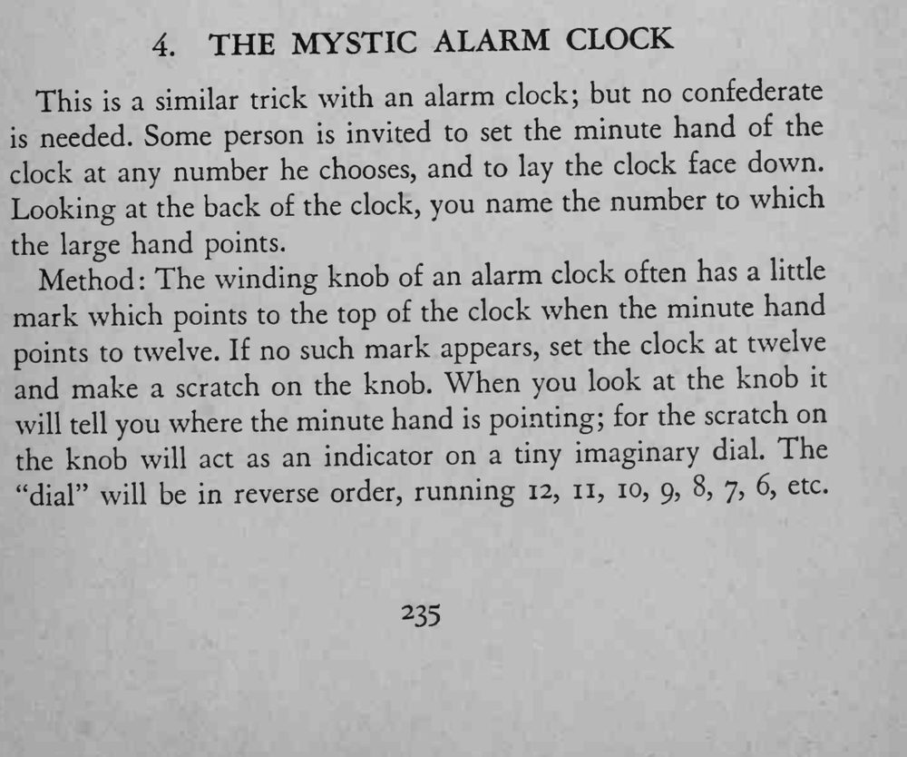

观众把闹钟拨到任意分钟、面朝下扣在桌上，魔术师只看钟背就说出了分针指的数字。
刻痕要事先做在对着十二点的位置，观察时别让观众看到你的视线。

This a similar trick with an alarm clock; but no confederate needed. Some person is invited to set the minute hand of the clock at any number he chooses, and to lay the clock face down. Looking at the back of the clock, you name the number to which the large hand points. Method: The winding knob of an alarm clock often has a little mark which points to the top of the clock when the minute hand points to twelve. If no such mark appears, set the clock at twelve and make a scratch on the knob. When you look at the knob it will tell you where the minute hand is pointing; for the scratch on the knob will act as an indicator on a tiny imaginary dial. The "dial" will be in reverse order, running 12, 11, 10, 9, 8, 7, 6, etc.